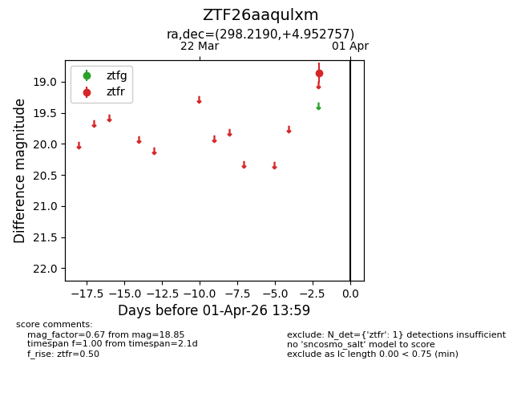
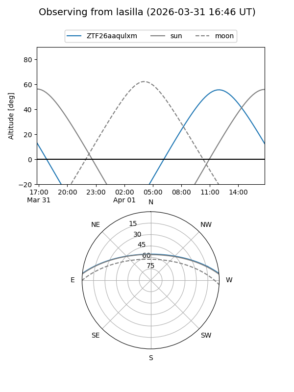
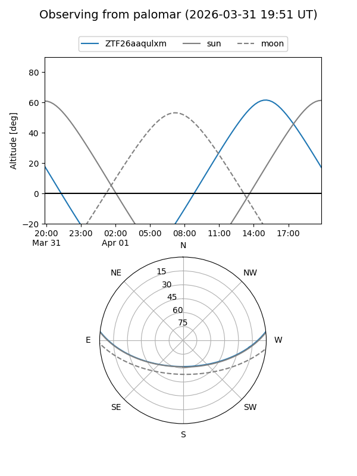

ZTF26aaqulxm
Target ZTF26aaqulxm at 2026-04-01 14:03
Aliases and brokers:
FINK: link
Lasair: link
ALeRCE: link
alt names
ZTF26aaqulxm (ztf,fink_ztf)
Coordinates:
equatorial (ra, dec) = 298.2190,+4.95276
equatorial (HMS+DMS) = 19:52:52.56,+04:57:09.93
galactic (l, b) = (44.5299,-11.27327)
Flags:
Photometry:
last ztfr=18.85
1 ztfr detections
Lightcurve

Visibility


Additional plots